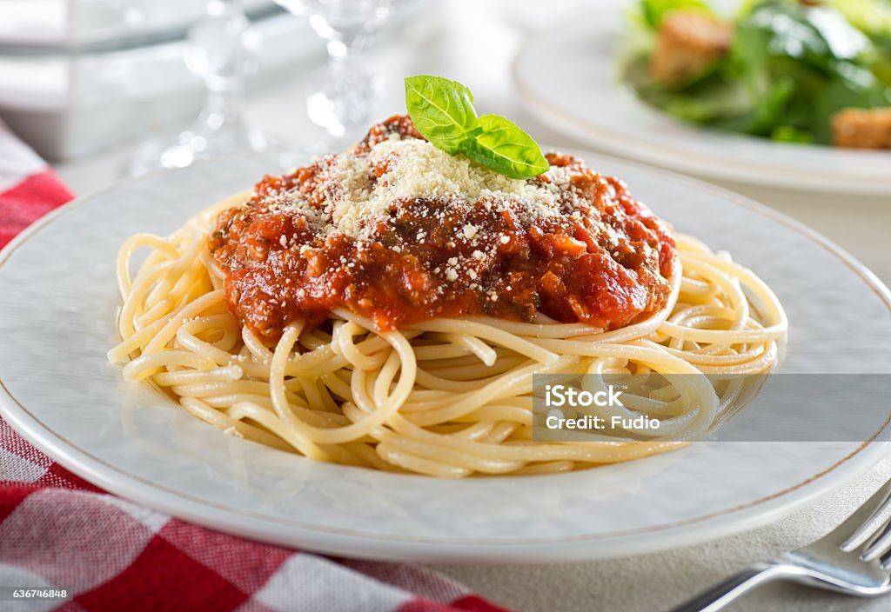

Spaghetti

Description
Traditional spaghetti dish that is afforable and quick to make with a substution of ground beef or sausage with ground turkey to avoid red meats.
Ingredients
- 1 pound of lean ground turkey
- 1 12oz package of spaghetti noodles of choice
- 1 can of tomato sauce
- 1 small can of tomato paste
- 1 can of dice tomatoes
- 1 tablespoon of mice garlic
- 1 tablespoon of italian seasoning
- 1 yellow onion
- 1 teaspoon of sugar
- 1 small package of slice white mushrooms
- 1 tablespoon of olive oil of choice
- 1 teaspoon of salt and ground pepper
Steps
- heat dutch oven or sauce pan to medium heat and add olive oil
- add ground turkey and let brown
- bring 4 quarts of water to a boil and add spaghetti noodles cook to preference
- once ground turkey is browned remove ground turkey and remove drippings from pan
- dice onion and cut mushroom to desired size and add pan with olive oil
- after veggies have cooked and tomato sauce, dice tomatoes and tomato paste
- readd ground turkey
- add minced garlic
- stir well
- add seasonings
- bring mixture to rolling boil reduce heat after boil to let simmer and stir occasionally
- let simmer for 45 minutes to hour
- server over spaghetti
- Enjoy!